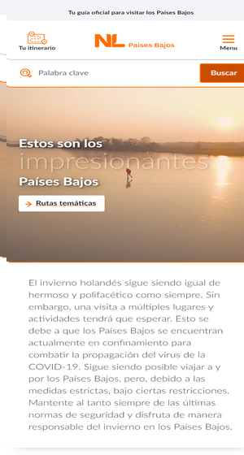

Gloria Rosado
Design Principles
Visual Hierarchy
Visit Holland
Netherlands and More Visual Hierarchy focuses on size of pictures, the more prominent are the ones that caught your attention They make emphasis on what they want to sell or show the most, heading and information makes a difference to hierarchy
Rule of Thirds
National Geographic
Nat GeoIf the focus of the image is on land (i.e. mountains, buildings), the horizon should fall near the upper third and if the focus is the sky (i.e. sunsets, sunrises), the horizon should fall near the lower third.
White Spaces and Clean Design
Visit Finland
Finland the WhiteWhite space is the area between design elements. It is also the space within individual design elements, including the space between typography glyphs (readable characters). Despite its name, white space does not need to be white. It can be any color, texture, pattern, or even a background image. White space, also known as “negative space,” is empty space around the content and functional elements of a page.